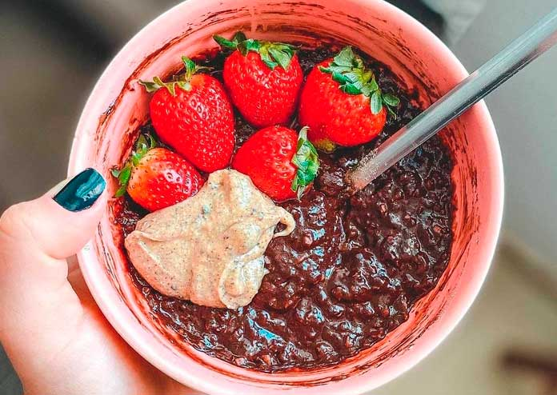

Mingau de Cacau
Ingredientes:
- Aveia; - Cacau; - Leite vegetal; - Melado (caso não tenha, pode usar o que tiver para adoçar).Modo de preparo:
Coloque os ingredientes na panela e misture tudo em fogo médio até ferver e engrossar. Sirva morno. Dica: Fica muito bom com morangos e coco ralado por cima.